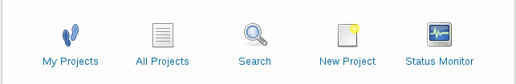
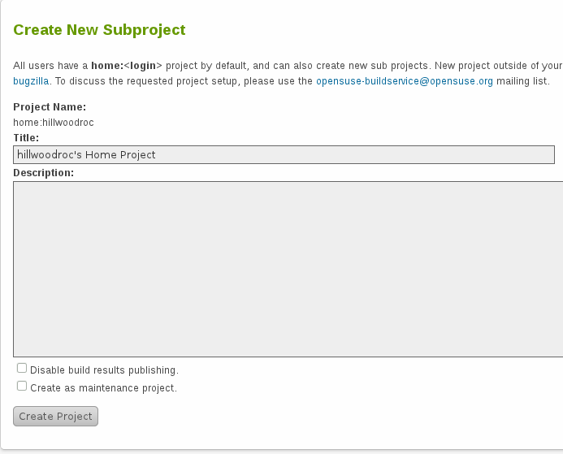

Open Build Service原名OpenSUSE Build Service，简称OBS，是由Novell开发的一套在线软件打包工具，开始仅支持Novell自己的suse发行版，后来扩展到Red Hat, Mandriva, Ubuntu, Fedora 和 Debian等多种发行版的支持，支持RPM和DEB包的创建。利用这套开发工具，软件开发者可以一次性的创建多个发行版不同体系的软件安装包，并可以自动创建符合标准的软件安装源，免除了自己创建相应开发环境的麻烦。下面山木计划通过几篇博文为各位简要介绍一下OpenSUSE Build Service的使用方法。首先为大家介绍OBS项目的创建过程。
Open Build Service的主页是 https://build.opensuse.org/ 。创建OBS项目首先需要一个Novell的账户，如果没有请点击主页右上角的“Register”注册一个。注册完毕后返回主页点击右上角的“login”登录，然后主页上会出现以下五个图标：

点击“New Project”那个图标进入项目创建页面：

Title和Description可以随便写，尽量不要留空，下面两个选项不要选上，然后点击“Create Project”。创建过程无需审核，即时生效。返回主页，点击“My Projects”，你会发现里面有了一个名为“home:[your user name]”的链接，说明你的项目已经创建成功，可以开始软件建包了。
=-=-=-=-=
Powered by Blogilo